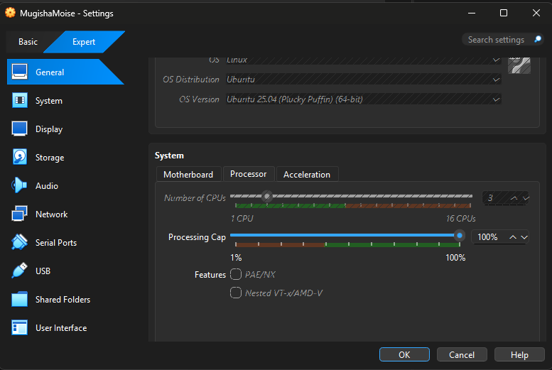
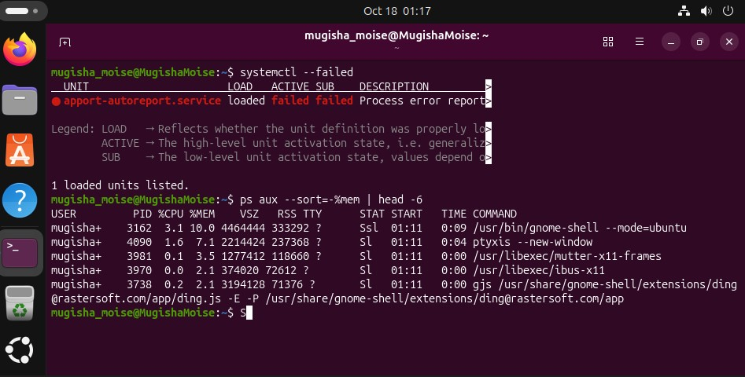
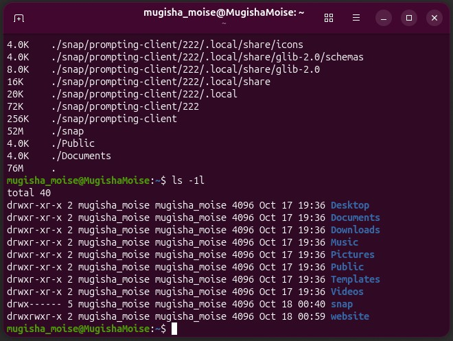

LINUX
INSTALLATION &
SYSTEM MANAGEMENT
Ubuntu · Virtualization · Dual-boot · Command line
A hands-on exploration of Linux systems through Ubuntu installation and configuration, virtual machines, dual-boot work, and regular command-line exercises during my first year of BUT Computer Science.

OBJECTIVE
Learn to install, configure and use Linux while building practical confidence with the terminal, files and permissions. This project combines the SAÉ S1.03 workstation assignment with ongoing Introduction to Operating Systems coursework.
Authentic screenshots from my installations and exercises. Select an image to enlarge it.




PRACTICAL WORK
01 — INSTALLATION & VIRTUALIZATION
Installed Ubuntu in VirtualBox and configured virtual machine
resources including memory, processors and storage.
02 — DUAL-BOOT
Worked with a dual-boot environment and explored differences
between running Linux natively and inside a virtual machine.
03 — TERMINAL COMMANDS
Practiced directory navigation and file operations using commands
such as pwd, ls, cd, mkdir, cat, head, tail, find and man.
04 — PERMISSIONS & SHELL
Practiced file permissions using chmod and ls -l, redirections,
variables and introductory shell concepts.
WHAT I LEARNED
Virtualization and VM configuration; differences between native and virtualized installations; navigating the Linux filesystem; managing files; reading system help; permissions and redirections. Shell scripting remains part of my ongoing coursework.
PROJECT DOCUMENTATION
My Ubuntu installation report for SAÉ S1.03, available in French and English.